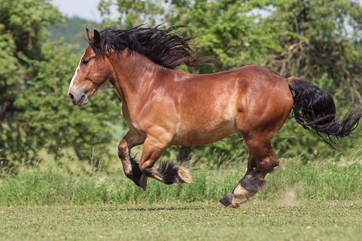
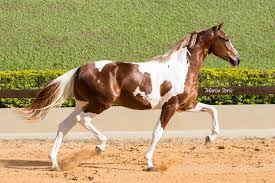

RAÇAS DE EQUINOS:
O cavalo Bretão é originário da região da Bretagne, na França. Seus moradores são os Betrons, daí o nome da raça. Ele é muito usado para a tração no seu país de origem, sendo seu porte musculoso uma característica marcante. Por ser um animal que possui a maior conversão alimentar entre os equinos, é também usado para a produção de carne e como ama de leite para outros cavalos, principalmente os de hipismo.
O cavalo Mangalarga é um genuíno brasileiro! Foi criado a partir de cavalos da raça Andaluz, Alter e Árabe, que vieram para o Brasil com a corte portuguesa. Ele é considerado o principal cavalo de sela do mundo! Sua principal característica é possuir pouco peso na frente e garupa mais robusta, o que proporciona leveza a seus movimentos, explosão nos arranques e comodidade ao seu cavaleiro. Por isso, sua marcha é considerada única!

O cavalo Quarto de Milha recebeu esse nome por ser um dos mais velozes em 402 metros, o que equivale a um quarto de milha. Ele é resultado do cruzamento de cavalos selvagens da América do Norte com os cavalos dos colonizadores ingleses. A raça foi a primeira a ser desenvolvida na América e conquistou muitos criadores e admiradores. Ela pode correr a 88 km/h e chegou ao Brasil em 1995. É um animal muito musculoso e pesa em torno de 500 kg. Também é uma raça bastante longeva.

O cavalo Pampa é originário do Brasil e recebe esse nome em homenagem ao estado do Rio Grande do Sul, que possui o codinome “Pampa”, e devido a sua coloração, que é malhada. Essa coloração é a mesma do cavalo Paint Horse Norte-americano, por isso, o Pampa é muitas vezes confundido com ele. Contudo, no Brasil, a raça vem sendo purificada para poder ser internacionalmente reconhecida.
O Appaloosa surgiu na região do Rio Pallose, quando os índios norte-americanos capturaram os cavalos de conquistadores espanhóis e gostavam particularmente dos malhados. Ele possui o corpo bastante parecido com o do Quarto de Milha e é muito resistente, mas sua característica mais marcante é a pelagem, que pode ter pintas ou manchas escuras espalhadas principalmente pela garupa e tórax.